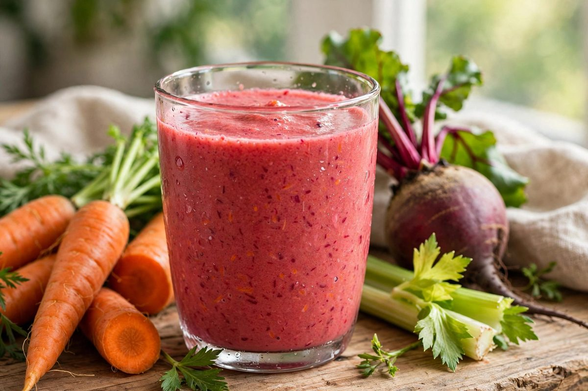

Home » Guides
Veggie Smoothies

Vegetable smoothies are an easy way to eat more vegetables, especially if you find salads boring or do not have time to cook. The trick is choosing vegetables that blend smoothly and balancing them with enough fruit or seasoning to taste good. A good veggie smoothie can be sweet, like a carrot and mango blend, or savoury, like a tomato and cucumber cooler. This guide covers the best vegetables for smoothies, how to balance flavours, and recipes for both sweet and savoury drinks.
The best vegetables for smoothies
The easiest vegetables to blend are cucumber, spinach, lettuce, and courgette, because they are mild and high in water. Carrots add sweetness and colour, but they need a good blender or a little extra liquid to blend smoothly. Cooked sweet potato and cooked beetroot add creaminess and sweetness. Cauliflower, steamed and frozen, blends into a thick, neutral base that works in any smoothie. Avoid raw broccoli and raw cabbage in large amounts, because they can taste bitter and cause bloating. Start with one vegetable and add more as you get used to the flavour.
Balancing the flavour
Vegetables need a flavour partner. Sweet vegetables like carrot and beetroot pair well with mango, orange, and ginger. Mild vegetables like cucumber and spinach pair well with apple, lemon, and mint. A squeeze of citrus brightens almost any veggie smoothie, and a small piece of ginger adds warmth. A pinch of salt improves savoury smoothies, while a teaspoon of honey can help a sweet one. Taste as you go and adjust: a smoothie that tastes flat usually needs acid, salt, or a little more fruit.
Three veggie smoothie recipes
A carrot and mango smoothie blends two carrots, a cup of frozen mango, a small piece of ginger, and a cup of water with ice. A cucumber and apple smoothie blends half a cucumber, one apple, a handful of spinach, the juice of half a lemon, and a cup of water. A savoury tomato smoothie blends two tomatoes, half a cucumber, a celery stick, a pinch of salt, a dash of hot sauce, and a cup of cold water. Each makes one large serving, and all three are best served cold and drunk fresh.
Savoury smoothies
Savoury smoothies are less common but worth trying, especially in summer. They are like a cold soup in a glass: tomato, cucumber, celery, and peppers blend with herbs, salt, and lemon juice. Add a spoonful of yoghurt for creaminess, or a little olive oil for richness. Savoury smoothies are low in sugar and calories, so they work well as a light lunch or a snack. They are also a good way to use up vegetables that are about to go soft. Serve them well chilled, in a glass with ice and a sprig of herbs.
Growing your veggie habit
The best way to build a veggie smoothie habit is to start small. Add a handful of spinach to a fruit smoothie you already like, and increase the amount over a few weeks as you get used to the taste. Once spinach is easy, try cucumber, then carrot, then kale. Keep a list of the combinations you enjoy, and rotate them through the week so you eat a range of vegetables. A veggie smoothie is a useful way to use up vegetables that are about to go soft, so check the fridge each morning and add whatever needs using. Within a month, a daily veggie smoothie feels normal.
Frequently Asked Questions
Can I put raw vegetables in a smoothie?
Yes, most raw vegetables blend well. Carrots and beetroot blend better if cooked first, and always wash vegetables well.
Do veggie smoothies have the same fibre as eating vegetables?
Mostly, if you blend the whole vegetable. Juicing removes fibre, but blending keeps it, which is one reason smoothies are better than juices.
What is the best vegetable for a beginner smoothie?
Cucumber or spinach. Both are mild, blend smoothly, and hardly change the flavour of the fruit.